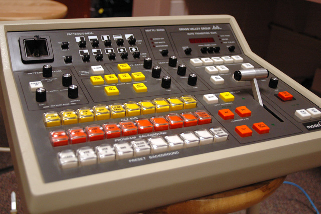
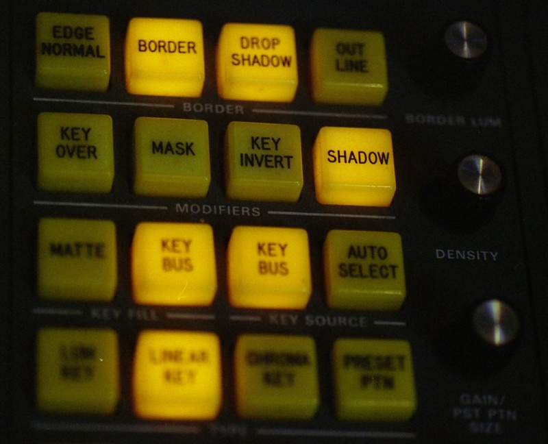

Grass Valley 1600 Series Production Switcher
The T-bar: a heavy lever the technical director physically shoves to push one live camera off the air and bring another on — with no undo

Overview
The Grass Valley Group 1600 Series is a production switcher — what much of the world calls a vision mixer — built by the company that defined the category. Grass Valley Group was founded in 1959 by Dr. Donald Hare in Grass Valley, California, in the foothills of the Sierra Nevada. It demonstrated its first video product, a distribution amplifier, in 1964, and by 1968 had introduced its first production switcher, which came to define the industry standard. The company merged with Tektronix in 1974, so the switchers of this era — including the 1600 Series documented in Grass Valley's own Television Equipment Catalog No. 16 of 1979 — were produced under that corporate lineage.
A production switcher selects between several live video sources and, where needed, composites them together: mixing, wiping, and keying pictures in real time as a broadcast goes out. In the United States the equipment is called a video switcher or production switcher and its operator is the technical director (TD); in much of the rest of the world both the device and its operator are called a vision mixer. The role is the video analogue of an audio mixing console — where an audio engineer fades between microphones, the TD fades and cuts between cameras. What makes the device a genuinely strange interface is the transition lever, universally called the T-bar: a heavy physical fader the TD drives by hand to sweep one live picture off the air and bring another on, in full view of a control room, while the show is actually broadcasting.
Deep dive
The core of the machine is the bus — a row of illuminated buttons each selecting one video input into a common signal path. The oldest scheme is the A/B mixer, with two equivalent buses and one chosen as the program (on-air) output. Most 1600 models instead used a flip-flop layout: one bus is always the program bus, the second is the preview (or preset) bus, and the operator can exchange their selected sources. This is the crucial mental model for the T-bar: on a flip-flop switcher the physical position of the transition lever does not indicate which bus is live, because the program bus is always the active — "hot" — one. The lever is a momentary act, not a persistent state marker, which is exactly why it reads as strange next to modern toggle-style interfaces.
The defining control is the transition lever — also called the T-bar or fader bar — an audio-fader-like handle used to transition between two buses. Instead of moving it by hand, the operator can press a button (commonly labeled mix, auto, or auto trans) that performs the transition over a user-defined time; a separate cut or take button swaps preview to program instantaneously. The 1979 Grass Valley catalog describes exactly this: sources selected on the preset (PST) bus "can be switched to the PGM bus with a cut-bar switch," and "a video mixing amplifier allows dissolves to be made between the PGM and PST buses." The hand-driven T-bar is the dramatic case: the TD's arm physically sweeps one live picture off the air and brings another on, with a duration determined only by how fast they move. There is no undo step and no confirmation dialog.
By the late 1970s the 1600 Series was sold as a family of models — 1600-1A/1L, 1600-2V, 1600-3H/3K/3F, 1600-7H/7K/7F, and master-control 1600-1T/4T/4S — sharing a dense, hardware-only control surface of buttons, tallies, and levers: no screen, no menu, every state visible as a lit lamp. The catalog's option list names an E-MEM (Effects Memory System), which let an operator store digital and analog control-panel selections and auto-transition rates as memory registers for later recall; it could even remember "the actual movements of the lever arms during a transition." This was a landmark move from purely physical muscle memory to machine memory for live switching. The transition lever nevertheless remained the human, physical heart of every model.
Around the transition lever sits the rest of the grammar. Sources selected on the preset bus can be switched to program by a cut-bar switch, and a video mixing amplifier allows dissolves between the program and preset buses. Keying lets one signal be inserted over the program picture: the fill is the image seen, the source is the mask that cuts its translucence, and the mask may be derived from chrominance (chroma key), luminance, pattern, or a split. Models such as the 1600-2V included an RGB chroma keyer with shadow key or an encoded chroma keyer. The museum's companion image shows a keyer control panel — the bank of clip-level, color-matte, and pattern controls that sit beside the main transition section.
Grass Valley's switchers became the reference standard for live television production; the company dominated the broadcast plant for decades, passing through Tektronix (1974–1999), a reincorporation as Grass Valley Group, Inc., Thomson (2002), Francisco Partners (2010–2011), Belden (2014, merged with Miranda), and finally Black Dragon Capital (2020). The bus architecture and transition lever the 1600 taught are still the mental model of every modern switcher panel, hardware and software alike, which is why the T-bar survives as the industry's most recognizable physical control. The 1600 also became an unlikely movie star: vintageTEK records that the famous GVG "T" handle, on a model 1600 switcher, was used as a prop in the first Star Wars film — when the Death Star fires on the planet, an operator is seen moving the GVG "T" handle to fire the weapon, which "was highly amusing to everybody in the switcher group." The Star Wars prop is documented as an ISI/Grass Valley switcher console roughly 4½ ft by 2½ ft by 8 in deep.
Team & pioneers
- Dr. Donald Hare. Founder of Grass Valley Group in 1959 in Grass Valley, California; previously ran the D. G. C. Hare Company (audio equipment) before moving into television electronics.
- Grass Valley Group. Manufacturer of the 1600-series production switchers; became the industry reference for live production switching; merged with Tektronix in 1974.
Media

Sources
- Wikipedia — Grass Valley (company): founded 1959 by Dr. Donald Hare; first video product 1964; first production switcher by 1968; Tektronix merge 1974
- Wikipedia — Vision mixer: buses, program/preset, transition lever (T-bar/fader bar), flip-flop mixers, keying, M/E, DSK, technical director
- Grass Valley Group, Television Equipment Catalog No. 16 (1979): 1600 Series production switchers, cut-bar switch, video mixing amplifier dissolves between PGM and PST, E-MEM Effects Memory System and lever-arm movement memory
- vintageTEK — Grass Valley Products: the GVG "T" handle (model 1600 switcher) used as a prop in the first Star Wars film
- PartsofSW — Death Star Controls: the superlaser controls were an ISI/Grass Valley switcher, ~4½ ft × 2½ ft × 8 in